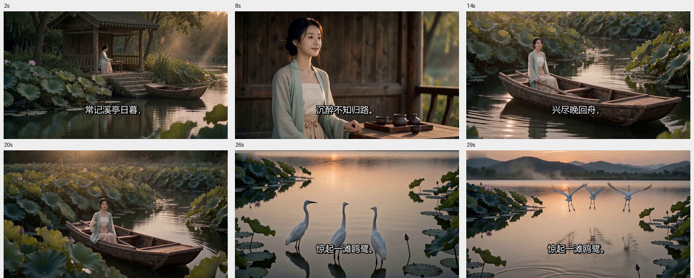
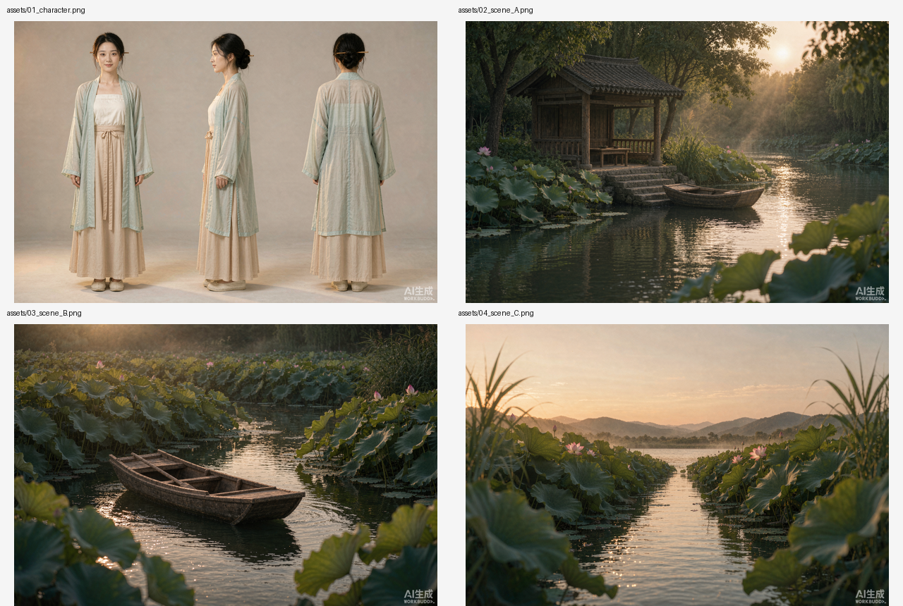

成片 · 《如梦令 · 常记溪亭日暮》
李清照｜30.17 秒｜1344×768｜H.264 + AAC｜含 6 句朗读、烧录字幕与程序化古风氛围音乐
成片抽帧
2s / 8s / 14s / 20s / 26s / 29s 六个时间点，可见人物、服装、光色与字幕贯穿一致

自动生成的 4 张参考资产
一张主角三视图 + 三张无人物场景定样图，是整支短片人物与场景不崩的关键

全自动流水线
用户只需要说一句话，中间不打断
01
解析与分镜
校订原文、判断题材情绪、自动选美学预设，产出六镜分镜表与 spec.json
02
提示词渲染
确定性脚本生成 10 条提示词：三视图、3 张场景、Seedance 2.5 完整版与内置后端精简版
03
自动生成资产
调用图像模型生成 4 张参考图，自动归位、清理水印
04
自动生成视频
4 图作参考 + 六镜提示词；方舟直连 30s 一次直出，或内置后端 2×15s 自动拼接
05
后期合成
edge-tts 逐镜朗读、烧录中文字幕、程序化五声音阶配乐、去角标、重编码
06
质检与交付
抽帧检查换脸/变形/字幕，如实报告后端限制与瑕疵，交出成片 MP4
技术说明
关于「是不是真 Seedance 2.5」，这里如实写出来
| 火山方舟直连 | 真 doubao-seedance-2-5-260628，30 秒一次连贯直出 / 16:9 / 1080p / 4 张 reference_image / 无水印。需自备 ARK_API_KEY 且账户已开通。 |
|---|---|
| 平台内置后端 | 实测落到 minimax-video-h3（不可指定模型）：prompt ≤ 2000 字、单次 4–15 秒、分辨率仅 768P/2K、强制带音频、左上角有角标。技能已自动用精简提示词 + 2×15s + 去角标适配。 |
| 本页成片 | 由内置后端分两段生成后自动拼接，含 6 句朗读、烧录字幕与氛围音乐。不是 Seedance 2.5 直出；完整版 30s 提示词已随技能提供，可直接用于即梦 / 方舟控制台。 |
| 美学约束 | 写实电影质感、通透柔亮侧逆光、奶白浅青浅杏衣衫与深橄榄绿环境、不整体染黄、一镜一个主动作、人物为正常人眼不发光、道具静止声明。 |
提示：本仓库不含任何 API Key、Token 或凭据。文档中出现的所有密钥名称都只是环境变量名或占位符。
安装
把整个技能目录放到 ~/.workbuddy/skills/poem-to-seedance-film/，重启 WorkBuddy 即可
Windows 可运行 install.ps1，macOS / Linux 运行 install.sh；脚本会自动备份已有安装并检查依赖。